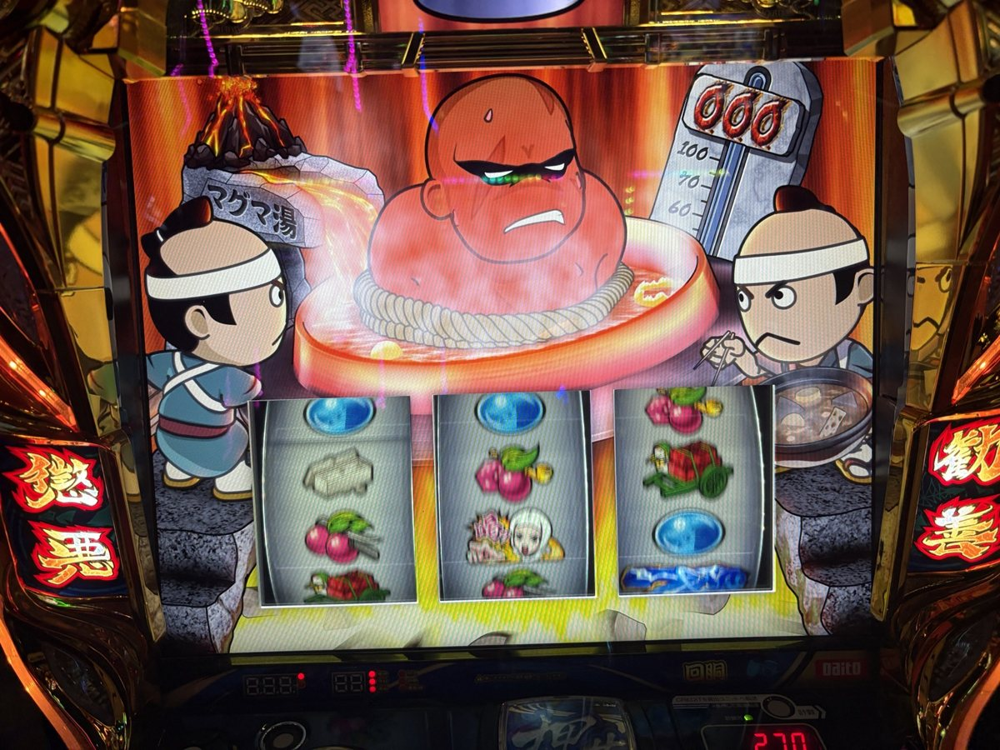
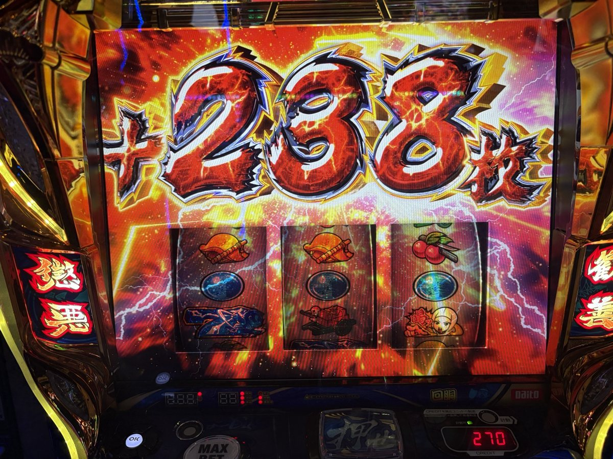

機種別実戦記録
真打 吉宗実戦｜高設定示唆が出るも真BIGに届かず、−4,108枚
2026年11月7日の真打 吉宗。総6,524G、投資5,428枚・回収1,320枚。高設定示唆が出る中、真BIGに届かなかった実戦を振り返ります。
総6,524G、投資5,428枚・回収1,320枚
11月7日は真打 吉宗を実戦。高設定示唆を何度も見られたものの、真BIGを引くことはできず、投資5,428枚・回収1,320枚で差枚−4,108枚となりました。
| 項目 | 結果 |
|---|---|
| 総プレイ数 | 6,524G |
| 通常プレイ数 | 5,005G |
| 通常プレイ数（CZ込み） | 5,222G |
| AT初当たり | 9回・1/556.1 |
| 投資 | 5,428枚 |
| 回収 | 1,320枚 |
| 差枚 | −4,108枚 |
| 最大獲得枚数 | 941枚 |
差枚は回収−投資で計算。最大獲得枚数はダイトモの遊技履歴の表示で、最終回収・差枚とは別です。
悪人成敗チャンスは21回中9回成功
ダイトモの遊技履歴上の成功率は9÷21で約42.9%。CZ確率1/238.3には直撃ATを含むと表示されています。集計条件を確認せず設定別のCZ確率と同一視しません。
| 対戦相手 | 成功／総回数 | 成功率 |
|---|---|---|
| 和入道 | 3／5 | 60% |
| 鼠小僧 | 2／10 | 20% |
| 姉御 | 2／4 | 50% |
| 武器商人 | 1／1 | 100% |
| 柳生 | 1／1 | 100% |
成功率は画面の回数から計算した実戦値です。少ない回数で、相手ごとの本来の期待度や設定を判断できません。
真高確率は1回、真BIGには届かず
本人の振り返りでは、真高確率は1回だけで駆け抜け。ダイトモの遊技履歴には真高確率の最大上乗せ50枚、真高確率 一撃の突入0回、真BIG0回と表示されました。「真高確率」と「真高確率 一撃」は別の項目です。
御白洲チャンスは6回。釜茹での刑の最大上乗せは238枚でした。

タップして拡大 ↗
タップして拡大 ↗高設定示唆は多かったが、結果につながらず
御白洲ビジョンで高設定示唆がたくさん出たという本人の所感。AT終了画面の三日月は1回だった記憶です。示唆の具体的な種類・回数、三日月の正確な回数は未確認のため、設定は断定しません。
設定等を示唆する御白洲ビジョンと、ダイトモの遊技履歴に表示された御白洲チャンス6回は別の項目です。
通常時の小役
| 小役 | 回数 | ダイトモの遊技履歴表示 |
|---|---|---|
| 弱チェリー | 35回 | 1/143.0 |
| 強チェリー | 5回 | 1/1001.0 |
| 弱スイカ | 47回 | 1/106.5 |
| 強スイカ | 4回 | 1/1251.3 |
| 弱チャンス目 | 52回 | 1/96.3 |
| 強チャンス目 | 4回 | 1/1251.3 |
| 共通ベル | 53回 | 1/94.4 |
記録の確認元
ダイトモの遊技履歴は2026年11月7日日20時59分時点の本人提供画像。投資・回収・示唆の所感は本人申告です。店舗・台番号・実戦時間は未確認。